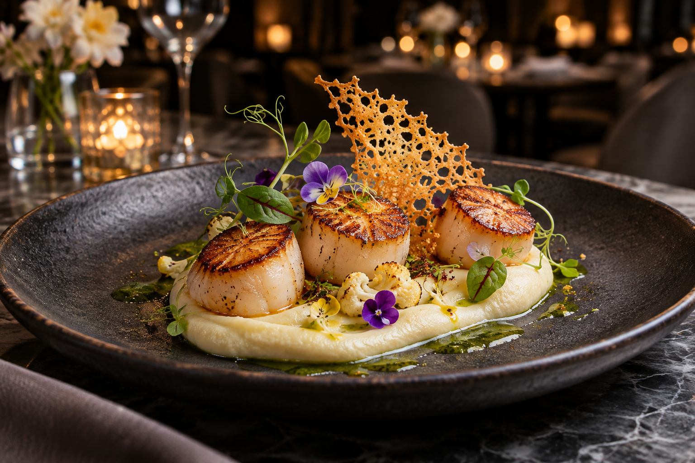
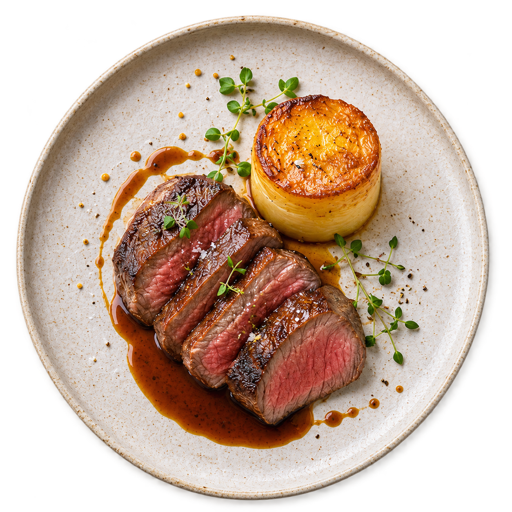
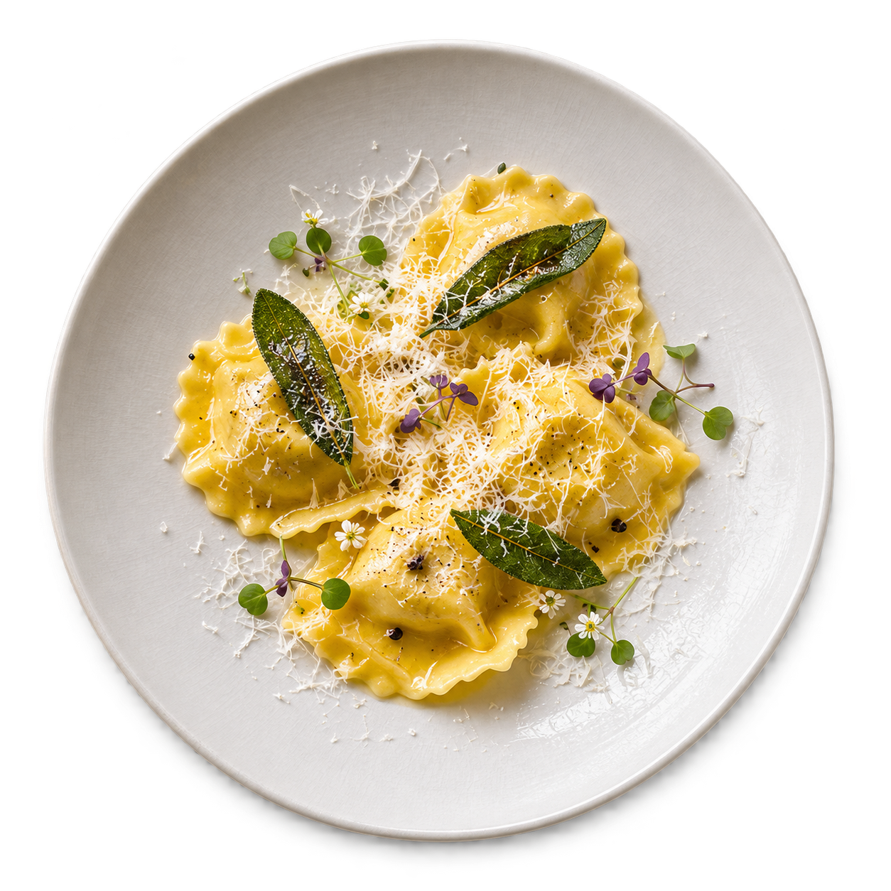
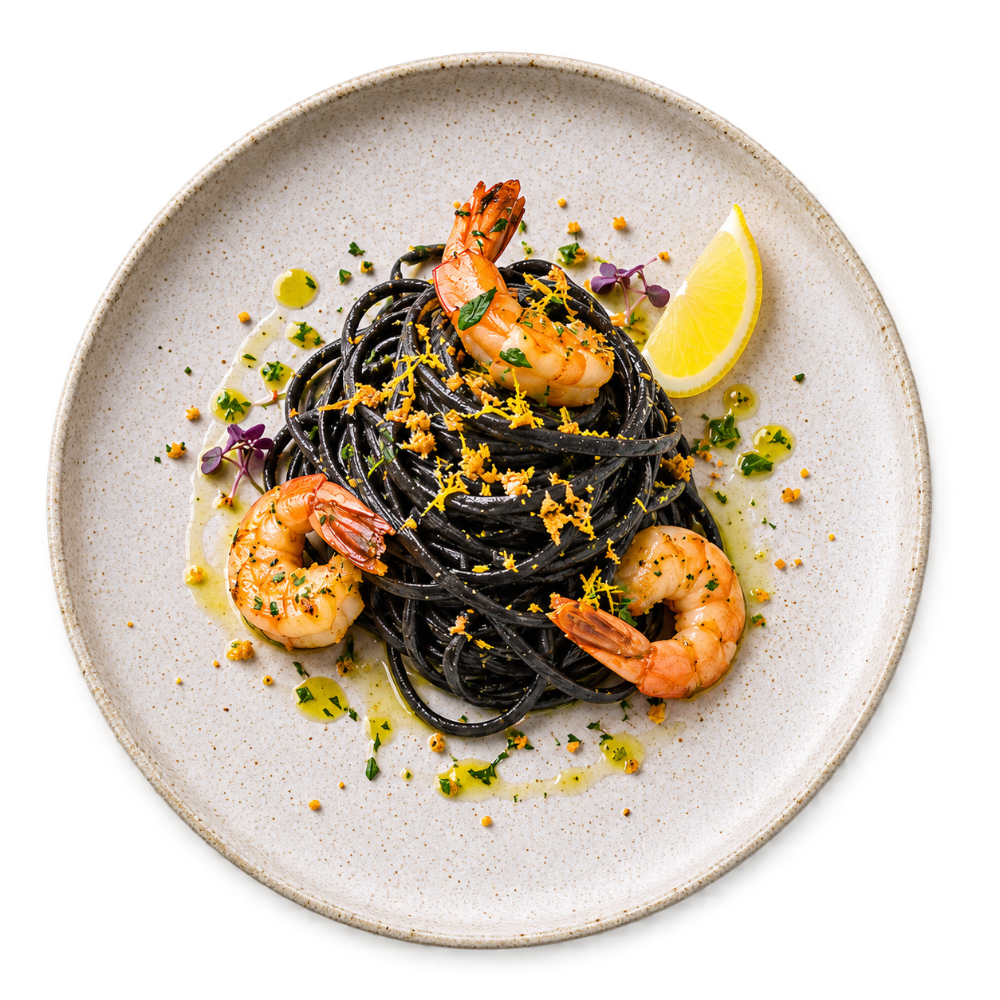
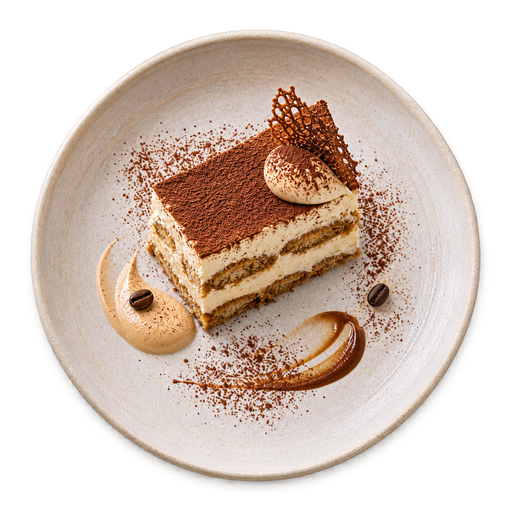
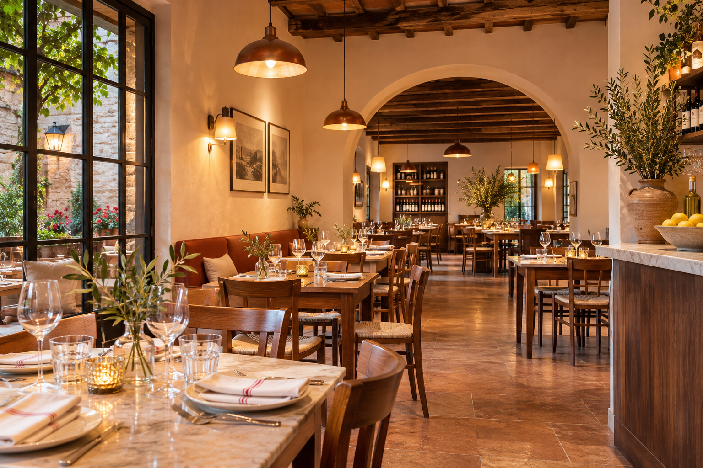

Capasante scottate
Crema di cavolfiore, olio alle erbe e cialda croccante

Ingredienti scelti, piatti fatti in casa e il tempo di condividere le cose buone.
Scopri il menuOgni giorno prepariamo una cucina semplice, con prodotti di stagione, pasta fresca e ricette da condividere.
Un pranzo in famiglia, una cena tra amici o una pausa senza fretta: c’è sempre un posto per te.




LunedìChiuso
Martedì – Venerdì12:00–14:30 · 19:00–22:30
Sabato12:00–14:30 · 19:00–23:00
Domenica12:00–15:00 · 19:00–22:00
Via del Forno 18 · Indirizzo e orari dimostrativi.
Contattaci
Questa è una demo: per creare un sito simile contatta direttamente creasito.com.